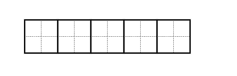

Qual o máximo divisor comum entre 9 e 21?
O MDC é um dos principais conceitos de Teoria dos Números, e o algoritmo de Euclides continua sendo extremamente eficiente até hoje.
Segue uma interpretação visual deste belo conceito.
Qual o máximo divisor comum entre 9 e 21?
21 / 9 = 2 (representado pelos dois quadrados de tamanho 9) e sobra 3
9 / 3 = 3 (vide os três quadrados de tamanho 3) e sobra 0
Portanto, o MDC é 3.

A ferramenta no link aqui plota a visualização de MDC para dois valores quaisquer de a e b.
Exemplo. MDC(10, 2) = 2, o último quadrado de tamanho 2.
Outro exemplo, entre 6 e 9 (mdc = 3, o último quadrado 3×3).

Veja também:
Forgotten Lore - Ideias Técnicas com uma pitada de filosofia.